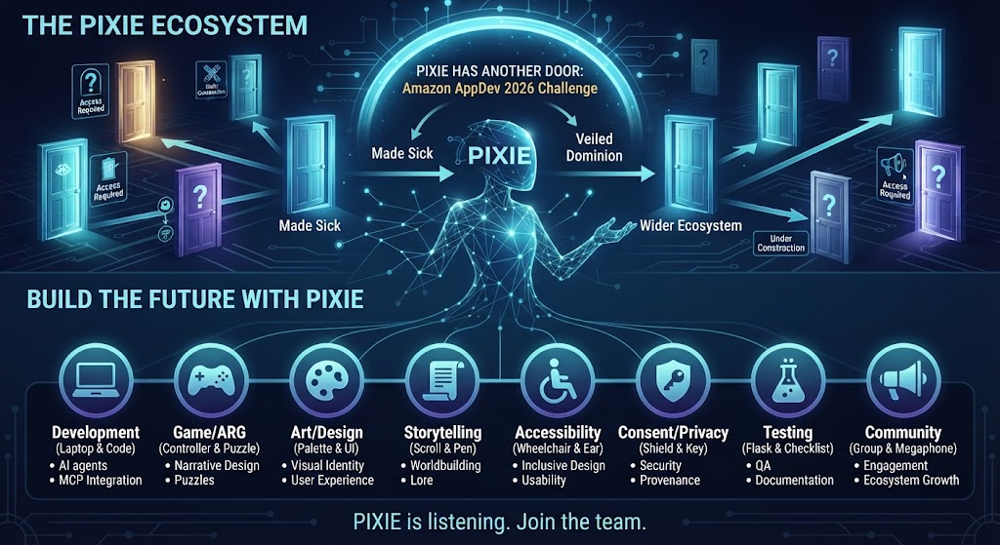

Start something useful
Choose a project below, then follow its contribution instructions. Agree on one bounded task before beginning.
Explore PIXIE’s projects ↓ · Contributor instructions ↗AN OUT-OF-WORLD GUIDE
PIXIE is the companion who stays with the work: helping you find your place, understand the context, and choose a useful next step. Across Loptr Lab’s remote multimedia training studio, her roles span stories, games, accessibility, and contributor coordination.
One project at a time. Shared context, clear sources, and the choice stays yours.
YOUR NEXT STEP
You do not need to understand the whole ecosystem before helping.
Choose a project below, then follow its contribution instructions. Agree on one bounded task before beginning.
Explore PIXIE’s projects ↓ · Contributor instructions ↗Open your existing project issue. Read the latest comments, record your progress, and leave the next action there. GitHub keeps the shared record.
Find your assigned GitHub issues ↗Open Project Companion for guided project questions and checkpoint drafts. This is a separately hosted tool; access may depend on your ChatGPT session. The public instructions and project repositories above remain available without it. Review drafts before posting them to GitHub.

THE PUBLISHED STORY TREATMENT
The project owner identifies the public “Pixie” story treatment as a source for PIXIE’s creation. It follows a philosophy student completing a pitch deck for P.I.X.I.E. and raises questions about creators being overlooked, isolation, recognition, belonging, and unease about AI.
Keep the source boundary clear. The post was published in Urban Alien Adventures on 17 November 2025. It calls itself a treatment and says further development of that project should remain offline. The post does not identify itself as part of 50 Ways to Leave Another or describe a working software assistant.
This guide links to it as story context and creative lineage. It does not present the post as a playable clue or invite revisions to that story.
Read “Pixie” at Urban Alien AdventuresLoptr Lab draws on freeCodeCamp’s contribution-led learning model. Its 50 Ways to Leave Another ARG concept is not a complete playable experience. This guide is not an ARG clue, a live PIXIE assistant, or a new project directory.
TWO DIFFERENT KINDS OF “SCATTERED”
The story format and the software map are related, but they are not the same thing. Naming both makes the project easier to follow without pretending everything is already joined together.
IN THE STORY
The transmedia approach can place story material in different places for people to discover and connect. A repository, README, or code file is not automatically a clue; a project must identify story material as such.
IN THE STUDIO
They contain different things: stories, planning guides, research, examples, code references, and prototypes. They are at different stages. A link between projects does not mean their software shares data or runs as one product.
WHAT THIS GUIDE DOES
The audited projects do not establish one central PIXIE service, shared memory, or universal permission to act. This page points to each project’s own source and limits; it does not connect or control them.
A DESIGN COMPARISON, NOT A CAPABILITY CLAIM
The project owner uses VIKI from I, Robot as a caution about a helper that claims to protect people but overrides their choices. PIXIE’s intended role is to show relevant context and possible consequences while leaving the decision with the person.
MCP is a way for an AI application to connect to a particular service; it is not PIXIE’s character or proof that all projects are connected. Any current software capability must be checked in that project’s own source and status notes.
THE WIDER CONVERSATION
The owner frames the wider work around AI in technology, diversity, equity and inclusion (DEI), digital literacy and access, and gender equality. The origin treatment speaks directly about creative recognition, isolation, belonging, and fear of AI. Existing prototypes test narrow ideas; they do not show that the digital divide has been solved.
THE WIDER LOPTR LAB
The full project directory already lives on the Loptr Lab ecosystem site. This guide links there instead of copying its catalog.
AREAS THE WORK TOUCHES
These areas are part of the wider direction. They are not a promise that every feature exists in every project today.
PROJECT-SPECIFIC PIXIE ROLES
Each card names one context, its current stage, and a limit. Follow its source link for more detail; these roles are not interchangeable.
8separate contexts
to explore
A SMALL, CLEAR START
Choose one project or question. You can flag confusing wording, ask what is actually working, or note an accessibility barrier. For code, follow the instructions in that project’s own repository.
The 50 Ways Public Discovery pilot documents open outside checks: whether results are useful, explanations are understandable, assumptions are mistaken, and people can stop without pressure.
Loptr Lab says current open reviews and contributions are voluntary and unpaid. Before work begins, scope, time, public credit, and an exit path should be agreed in writing. Participation does not promise employment, ownership, academic credit, or future pay.
Read collaboration pathways and termsThe origin treatment above says its further development should remain offline. This guide does not ask visitors to rewrite or extend that story.
THE HELPER’S BOUNDARIES
These are the intended principles. They do not imply that every project already implements every feature.
Make it clear where a claim or suggestion came from.
People can accept, ignore, or change a suggestion.
A shared name does not mean shared data, shared access, or permission to act.
No automatic posting, messaging, publishing, or changes to project information.
FEEDBACK ON THIS GUIDE
This opens a public GitHub issue that anyone can read. You need a GitHub account to post. Please leave out passwords, private records, contact details, or confidential project material.
ONE STEP IS ENOUGH